高级 RAG 增强技术全面解析¶
1、概述¶
标准 RAG 流程：文档分块 → 向量存储 → 相似度检索 → LLM 生成答案
本课件从 五个维度 全面分析 RAG 增强技术：
| 维度 | 作用阶段 | 核心目标 |
|---|---|---|
| 查询增强 | 输入阶段 | 优化查询表达 |
| 索引增强 | 索引构建阶段 | 提升索引质量 |
| 检索器增强 | 检索阶段 | 精准获取内容 |
| 生成器增强 | 生成阶段 | 优化提示效果 |
| 管道增强 | 全流程 | 动态优化流程 |
2、查询增强¶
2.1 核心目标¶
用户的原始提问（Original Question）往往是模糊、简短或缺乏语义背景的。我们需要在"查询进入向量库之前"对其进行改造，提升检索的精准度。
2.2 核心逻辑¶
- 修改和优化用户输入的查询
- 更好地表达或处理查询意图
- 解决用户原始查询与文档内容之间的语义不匹配问题
2.3 优化策略¶
2.3.1 假设问题法 （HyQE）¶
1. 核心思想¶
这是一种 "以文档为中心" 的策略。利用 LLM 预先为每个文档块生成可能的"用户提问"。在检索时，将用户的 Query 与这些"假设问题"进行匹配，而非直接匹配文档内容。问题和问题之间天然更容易比较相似度——长度接近、语义模式相同、表达方式也更贴近用户习惯。
2. 解决核心痛点¶
| 痛点 | 问题描述 | 解决方式 |
|---|---|---|
| 跨域不对称 | 用户问的是"问题"，文档写的是"陈述句答案"，两者语义模式不同 | Query-to-Query 匹配，同为疑问句，语义更接近 |
| 长度不匹配 | 用户查询通常很短，文档块可能很长 | 假设问题长度与用户查询相近 |
| 意图模糊 | 用户可能不知道如何精确表达 | 预生成多种问法覆盖不同表达方式 |
用掌柜智库的场景具体理解这三个痛点：
| Text Only | |
|---|---|
1 2 3 4 5 6 7 8 9 10 11 12 13 14 15 16 17 18 19 20 21 22 23 24 25 26 27 28 29 30 31 32 33 34 35 36 37 38 39 40 41 42 43 44 45 46 47 48 49 50 51 52 53 54 55 56 | |
3. 核心流程¶
| Text Only | |
|---|---|
1 2 3 4 5 6 7 8 9 | |
4. 核心流程拆解¶
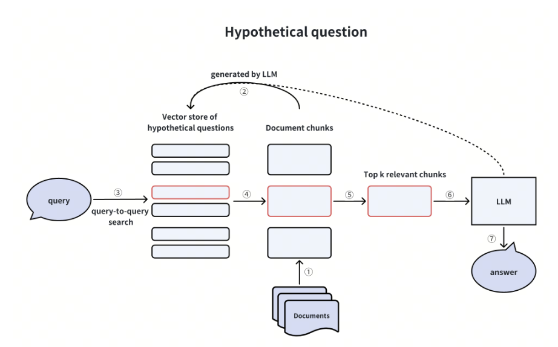
第一阶段：索引构建（离线预处理）
| 步骤 | 操作 | 说明 |
|---|---|---|
| ① | 文档分块 | 将原始文档切分为语义完整的文档块 |
| ② | LLM 生成问题 | 对每个文档块，让 LLM 生成 N 个"用户可能会问的问题" |
| ③ | 向量化存储 | 将假设问题向量化存入向量库，并建立问题→文档块的映射关系 |
示例：文档块内容是"本产品使用 5V 电池"
- 生成问题1："这个产品用多少伏的电池？"
- 生成问题2："电池规格是什么？"
- 生成问题3："需要什么类型的电池？"
第二阶段：在线检索
| 步骤 | 操作 | 说明 |
|---|---|---|
| ④ | 问题-问题匹配 | 用户查询"怎么换电池？"与假设问题库进行向量相似度匹配 |
| ⑤ | 定位原始文档 | 找到最相似的假设问题后，通过映射关系获取对应的原始文档块 |
| ⑥ | LLM 生成答案 | 将原始文档块（而非假设问题）作为上下文，结合用户问题生成最终答案 |
5. 优点 / 代价¶
优点：
- 解决 Query 和 Document 语义模式不匹配问题
- Query-to-Query 匹配更精准
- 可覆盖多种问法，提升召回率
缺点：
- 索引构建时需要大量 LLM 调用，成本高
- 生成的假设问题质量依赖 LLM 能力
- 索引体积增大（每个文档块对应多个问题向量）
2.3.2 假设文档嵌入 (HyDE)¶
1. 核心思想¶
这是一种 "以查询为中心" 的策略。利用 LLM 根据用户 Query 先生成一个"虚构的答案"（假设文档）。虽然这个答案内容可能包含幻觉，但其语义模式和向量空间分布与真实答案非常接近。然后用这个"假设文档"的向量去检索真实的文档块。
2. 解决核心痛点¶
| 痛点 | 问题描述 | 解决方式 |
|---|---|---|
| 查询-文档不对称 | 短查询 vs 长文档，语义密度差异 | 生成与文档形式相似的假答案进行匹配 |
| 索引不可变 | 已有索引无法修改（或者修改成本极高），无法使用假设问题法 | 仅在查询端处理，不改变索引结构 |
| 零样本场景 | 用户问题可能涉及知识库中没有直接答案的内容 | 假答案提供语义"锚点"，帮助找到相关内容 |
用掌柜智库的场景具体理解这三个痛点：
| Text Only | |
|---|---|
1 2 3 4 5 6 7 8 9 10 11 12 13 14 15 16 17 18 19 20 21 22 23 24 25 26 27 28 29 30 31 32 33 34 35 36 37 38 39 40 41 42 43 44 45 46 47 48 49 | |
3. 核心流程¶
| Text Only | |
|---|---|
1 2 3 4 5 6 7 8 9 10 11 12 13 14 | |
4. 核心流程拆解¶
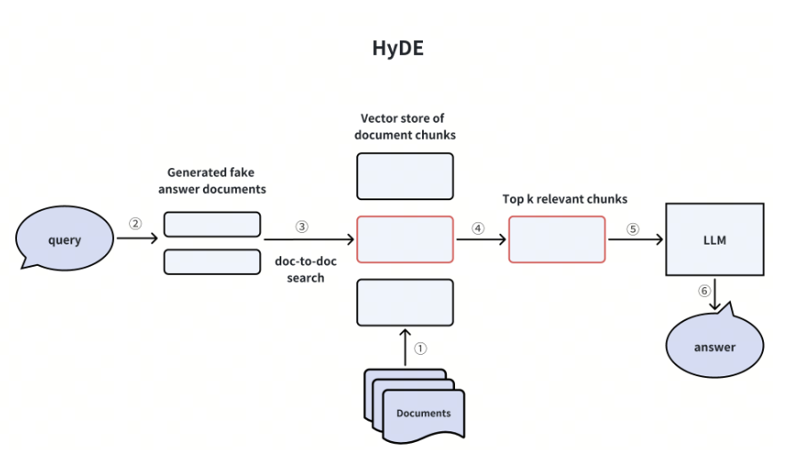
阶段一：假答案生成
| 步骤 | 操作 | 说明 |
|---|---|---|
| ① | 接收用户查询 | 获取用户的原始问题 |
| ② | LLM 生成假答案 | 不提供任何上下文，让 LLM "凭空"生成一个可能的答案 |
关键洞察：假答案的内容准确性不重要，重要的是它的语义向量与真实答案在向量空间中的位置接近
阶段二：向量检索
| 步骤 | 操作 | 说明 |
|---|---|---|
| ③ | 假答案向量化 | 将假答案转换为向量 |
| ④ | 相似度检索 | 用假答案向量在文档库中检索最相似的真实文档块 |
阶段三：答案生成
| 步骤 | 操作 | 说明 |
|---|---|---|
| ⑤ | 构建提示 | 将检索到的真实文档块作为上下文 |
| ⑥ | 生成最终答案 | LLM 基于真实文档和用户问题生成准确答案 |
5. 优点 / 代价¶
优点：
- 不需要修改索引结构，即插即用
- 将"问题语义空间"转换到"答案语义空间
- 适用于已有系统的增量优化
代价：
- 每次查询都需要额外的 LLM 调用，增加延迟
- 假答案质量依赖 LLM 对领域的理解
- 如果 LLM 对领域完全陌生，假答案可能偏离真实答案语义空间
2.3.3 子查询分解 (Sub-queries)¶
1. 核心思想¶
当用户提出复杂问题（如对比、多条件、多实体）时，单一的向量检索往往难以兼顾所有方面。子查询策略利用 LLM 将复杂问题分解为多个简单的子问题，分别进行检索，最后汇总上下文生成综合答案。
2. 解决核心痛点¶
| 痛点 | 问题描述 | 解决方式 |
|---|---|---|
| 多实体问题 | "A 和 B 有什么区别？"需要同时了解 A 和 B | 分别检索 A 和 B 的信息 |
| 多跳推理 | 答案需要结合多个知识点 | 分解为多个单跳问题逐一检索 |
| 向量稀释 | 复杂查询向量化后，各部分语义被稀释 | 每个子查询聚焦单一语义 |
用掌柜智库的场景具体理解这三个痛点：
| Text Only | |
|---|---|
1 2 3 4 5 6 7 8 9 10 11 12 13 14 15 16 17 18 19 20 21 22 23 24 25 26 27 28 29 30 31 32 33 34 35 36 37 38 39 40 41 42 43 44 45 46 47 48 | |
3. 核心流程¶
| Text Only | |
|---|---|
1 2 3 4 5 6 7 8 9 10 11 12 13 14 15 16 17 18 19 20 21 22 23 24 25 26 | |
4. 核心流程拆解¶
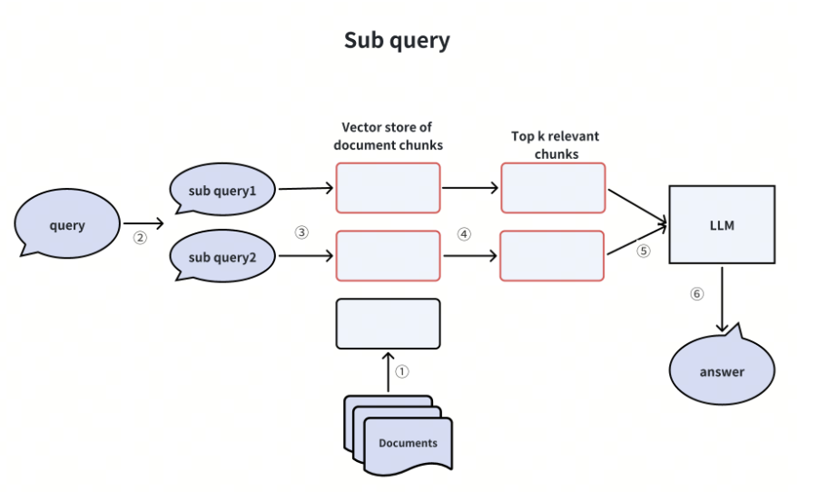
阶段一：查询分解
| 步骤 | 操作 | 说明 |
|---|---|---|
| ① | 分析原始查询 | 识别查询中的多个实体、条件或意图 |
| ② | LLM 生成子查询 | 将复杂问题分解为 2-5 个简单的独立子问题 |
分解示例： - 原始："对比 React 和 Vue 的性能和学习曲线" - 子查询1："React 的性能特点是什么？" - 子查询2："Vue 的性能特点是什么？" - 子查询3："React 的学习曲线如何？" - 子查询4："Vue 的学习曲线如何？"
阶段二：并行检索
| 步骤 | 操作 | 说明 |
|---|---|---|
| ③ | 子查询向量化 | 分别将每个子查询转换为向量 |
| ④ | 并行检索 | 每个子查询独立检索 Top-K 相关文档块 |
| ⑤ | 结果去重 | 合并所有检索结果，去除重复文档块 |
阶段三：综合回答
| 步骤 | 操作 | 说明 |
|---|---|---|
| ⑥ | 构建完整上下文 | 将所有相关文档块组织成结构化上下文 |
| ⑦ | LLM 综合回答 | 基于完整上下文和原始问题生成综合性答案 |
5. 优点 / 代价¶
优点：
- 有效处理对比类、多条件类复杂问题
- 每个子查询聚焦单一语义，检索更精准
- 支持多跳推理（Multi-hop reasoning）
代价：
- 检索次数成倍增加，延迟上升
- 需要合理的分解策略，分解不当反而降低效果
- 上下文合并可能超出 LLM 窗口限制
2.3.4 回溯提示¶
1. 核心思想¶
“以退为进”。遇到过于具体的细节问题时，先不要急着检索细节，而是先通过 LLM 生成一个更高层级、更抽象的“背景问题/原理问题”，先搞懂大道理，再解小问题。
2. 解决核心痛点¶
| 痛点 | 问题描述 | 解决方式 |
|---|---|---|
| 过度具体 | "100亿条数据能存吗？"知识库可能没有这个具体数字 | 抽象为"数据量限制是多少？" |
| 缺乏背景 | 直接回答细节问题容易产生幻觉 | 先检索原理/定义，再推导具体答案 |
| 知识推理 | 需要基于基础知识进行推理计算 | 获取基础公式/原理后进行推导 |
用掌柜智库的场景具体理解这三个痛点：
| Text Only | |
|---|---|
1 2 3 4 5 6 7 8 9 10 11 12 13 14 15 16 17 18 19 20 21 22 23 24 25 26 27 28 29 30 31 32 33 34 35 36 37 38 39 40 41 42 43 44 45 46 47 48 49 50 51 | |
3. 核心流程¶
| Text Only | |
|---|---|
1 2 3 4 5 6 7 8 9 10 11 12 13 14 15 16 17 18 19 20 21 22 23 24 25 26 27 28 29 30 31 32 33 34 35 36 37 38 39 | |
4. 核心流程拆解¶
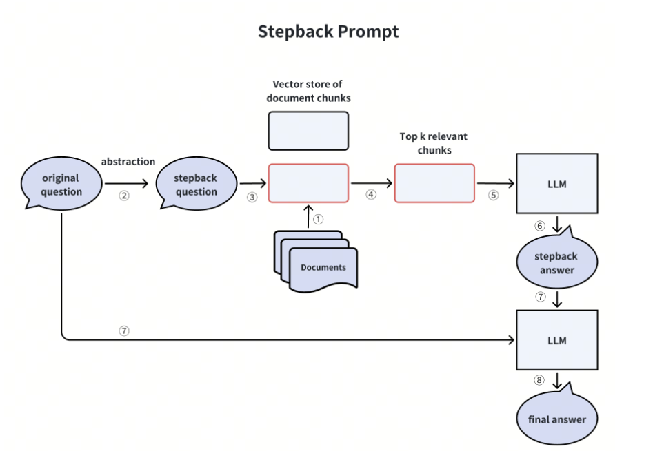
第一阶段：退后一步（Abstraction）
| 步骤 | 操作 | 说明 |
|---|---|---|
| ① | 分析原始问题 | 识别问题中的具体数值、特定场景等细节 |
| ② | 生成回溯问题 | LLM 将具体问题抽象为更通用的原理性问题 |
抽象示例：
- 原始："小球从 10 米掉下来要多久？"
- 回溯："自由落体运动的物理公式是什么？"
第二阶段：检索背景知识
| 步骤 | 操作 | 说明 |
|---|---|---|
| ③ | 回溯问题检索 | 用抽象化的回溯问题进行向量检索 |
| ④ | 获取原理知识 | 检索到基础定义、公式、原理等文档块 |
| ⑤ | 生成回溯答案 | LLM 基于检索结果生成中间答案（背景知识） |
第三阶段：综合推理
| 步骤 | 操作 | 说明 |
|---|---|---|
| ⑥ | 双输入合并 | 将原始问题 + 回溯答案（背景知识）组合 |
| ⑦ | 推理生成 | LLM 利用背景知识对具体问题进行推理，生成最终答案 |
推理示例： - 回溯答案："自由落体公式 h = ½gt², g ≈ 9.8 m/s²" - 原始问题："10 米" - 最终答案："代入公式，t = √(2×10/9.8) ≈ 1.43 秒"
5. 优点 / 代价¶
优点：
- 减少幻觉：强迫模型先找到可靠的理论依据再回答
- 提升深度：回答不仅是"是什么"，还能解释"为什么"
- 特别适合科学、数学、逻辑推理场景
代价：
- 多了一轮 LLM 生成（回溯问题）和一轮中间推理（回溯答案）流程最长，延迟最高
- 如果 LLM 无法正确抽象问题，效果会打折扣
- 对于直接能检索到答案的问题，反而是画蛇添足
2.4 四种策略对比总结¶
| 策略 | 核心机制 | 作用阶段 | 适用场景 | 主要代价 |
|---|---|---|---|---|
| HyQE | 预生成问题库 | 索引构建 | 文档固定、可预处理 | 索引成本高 |
| HyDE | 生成假答案检索 | 查询时 | 已有索引、无法修改 | 查询延迟 |
| 子查询分解 | 分解→并行检索→合并 | 查询时 | 复杂多实体问题 | 检索次数多 |
| 回溯提示 | 抽象→检索原理→推理 | 查询时 | 推理类、细节问题 | 多轮 LLM 调用 |
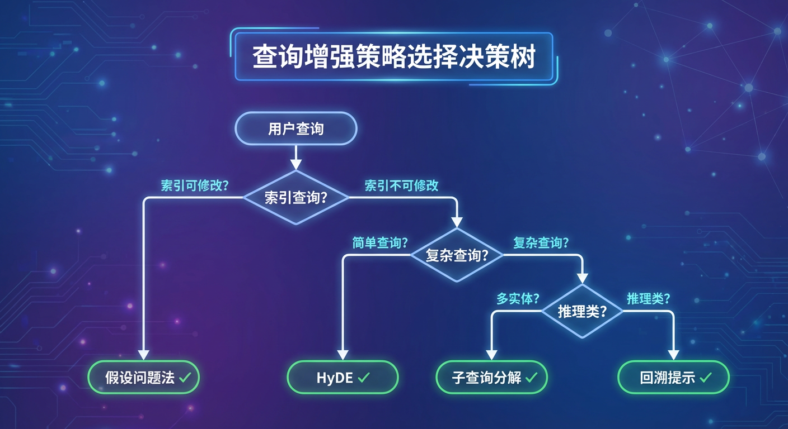
3、索引增强 (Indexing Enhancement)¶
3.1 核心目标¶
在文档进入向量库之前，通过优化索引结构和分块策略，从源头提升检索质量。解决"分块粒度"与"上下文完整性"之间的矛盾。
3.2 核心逻辑¶
- 优化文档分块索引的创建方式
- 提升索引结构的检索效率
- 解决单一粒度分块的局限性
- 结合多种检索方法互补短板
3.3 优化策略¶
3.3.1 自动合并文档块 (Auto-merging Chunks)¶
1. 核心思想¶
建立父子两级分块结构。用细粒度的"子块"进行精准检索匹配，但在返回结果时，如果多个子块来自同一个"父块"，则自动合并返回整个父块，保证上下文完整性。
2. 解决核心痛点¶
| 痛点 | 问题描述 | 解决方式 |
|---|---|---|
| 粒度矛盾 | 小块检索精准但上下文不足，大块上下文完整但检索模糊 | 用小块检索，返回大块 |
| 信息割裂 | 相关内容被切分到不同块，LLM 无法理解完整逻辑 | 自动合并相邻相关块 |
| 冗余检索 | 检索到多个高度相关的小块，实际来自同一段落 | 合并去重，减少冗余 |
3. 核心流程¶
| Text Only | |
|---|---|
1 2 3 4 5 6 7 8 9 10 11 12 13 14 15 16 17 18 19 20 21 22 | |
4. 核心流程拆解¶
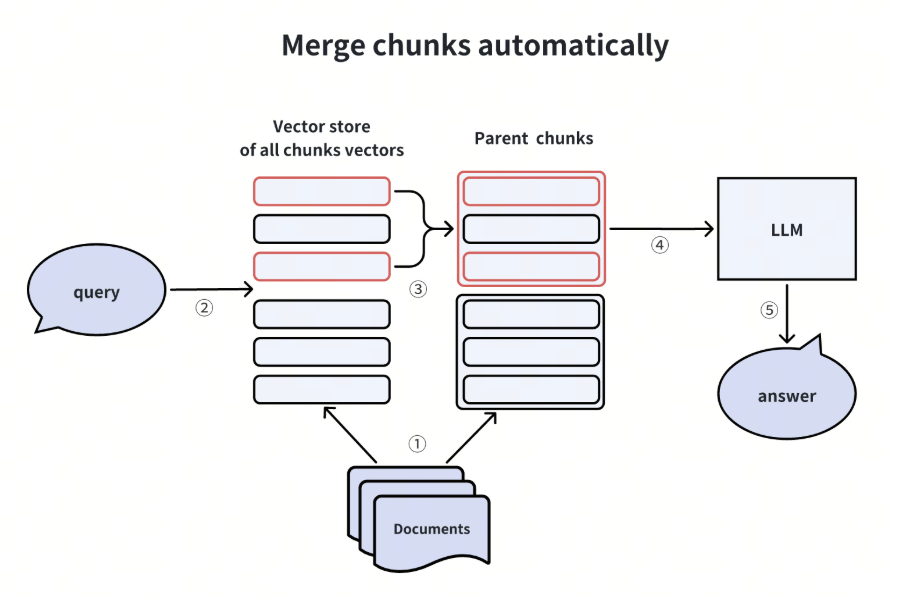
第一阶段：索引构建
| 步骤 | 操作 | 说明 |
|---|---|---|
| ① | 父块分割 | 按较大粒度（如 512 tokens）切分文档为父块 |
| ② | 子块分割 | 每个父块再切分为更小的子块（如 128 tokens） |
| ③ | 建立映射 | 记录每个子块所属的父块 ID |
| ④ | 子块向量化 | 仅对子块进行向量化并存入向量库 |
第二阶段：检索与合并
| 步骤 | 操作 | 说明 |
|---|---|---|
| ⑤ | 子块检索 | 用户查询匹配 Top-K 个子块 |
| ⑥ | 统计父块 | 统计每个父块被命中的子块数量 |
| ⑦ | 合并判断 | 若某父块的子块命中数 ≥ 阈值 n，返回整个父块 |
| ⑧ | 构建上下文 | 将并后的父块作为 LLM 上下文 |
阈值设置示例：父块含 4 个子块，阈值设为 2，即命中 2 个及以上子块时返回父块
5. 优点 / 代价¶
优点：
- 兼顾检索精准度与上下文完整性
- 自动适应不同查询的信息密度需求
- 减少 LLM 上下文中的信息碎片
代价：
- 索引结构更复杂，需要维护父子映射关系
- 存储空间增加（需要同时存储父块和子块）
- 合并阈值需要根据业务调优
3.3.2 分层索引 (Hierarchical Index)¶
1. 核心思想¶
建立两级索引结构：第一层是文档/章节的摘要索引，第二层是详细的文档块索引。检索时先通过摘要层快速定位相关文档，再在目标文档内精确检索具体块。类似于"先查目录，再翻具体页"。
2. 解决核心痛点¶
| 痛点 | 问题描述 | 解决方式 |
|---|---|---|
| 海量数据 | 文档库太大，全量检索效率低 | 快速过滤，缩小检索范围 |
| 跨文档干扰 | 不同文档的相似片段互相干扰 | 先定位文档，再文档内检索 |
| 层级信息丢失 | 扁平化分块丢失文档结构信息 | 保留文档-章节-段落层级关系 |
3. 核心流程¶
| Text Only | |
|---|---|
1 2 3 4 5 6 7 8 9 10 11 12 13 14 15 16 17 18 19 20 21 22 23 24 | |
4. 核心流程拆解¶
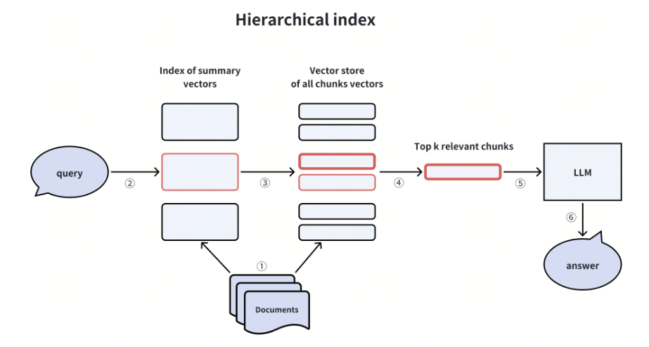
第一阶段：索引构建
| 步骤 | 操作 | 说明 |
|---|---|---|
| ① | 文档分组 | 按文档/章节边界组织原始内容 |
| ② | 生成摘要 | 用 LLM 或规则为每个文档/章节生成摘要 |
| ③ | 摘要向量化 | 将摘要存入第一层向量库 |
| ④ | 详细分块 | 对每个文档内部进行细粒度分块 |
| ⑤ | 块向量化 | 将文档块存入第二层向量库，关联所属文档 ID |
第二阶段：两级检索
| 步骤 | 操作 | 说明 |
|---|---|---|
| ⑥ | 摘要层检索 | 用户查询先在摘要层检索，获取 Top-M 相关文档 |
| ⑦ | 范围限定 | 将检索范围限定在这 M 个文档内 |
| ⑧ | 块级检索 | 在限定范围内进行精确的块级检索，获取 Top-K |
| ⑨ | 返回结果 | 返回最终的文档块作为 LLM 上下文 |
5. 优点 / 代价¶
优点：
- 大幅提升海量数据场景下的检索效率
- 保留文档层级结构信息
- 减少跨文档的无关干扰
代价：
- 需要额外生成和维护摘要索引
- 摘要质量直接影响第一层过滤效果
- 如果第一层漏掉相关文档，后续无法弥补
适用场景：图书馆馆藏、企业知识库、多产品文档中心
3.3.3 混合检索 + 重排序 (Hybrid Retrieval & Reranking)¶
1. 核心思想¶
单一的向量检索（稠密检索）可能遗漏关键词精确匹配的结果。混合检索同时使用多种检索方法（如向量检索 + BM25），然后通过 Reranker 对多路结果进行重新排序，取长补短，提升召回质量。
2. 解决核心痛点¶
| 痛点 | 问题描述 | 解决方式 |
|---|---|---|
| 关键词盲区 | 向量检索对专有名词、代码、ID 等不敏感 | BM25 精确匹配关键词 |
| 语义盲区 | BM25 无法理解同义词、上下文语义 | 向量检索捕捉语义相似 |
| 排序不准 | 各路召回的分数不可比 | Reranker 统一评估相关性 |
3. 核心流程¶
| Text Only | |
|---|---|
1 2 3 4 5 6 7 8 9 10 11 12 13 14 15 16 17 18 19 20 21 22 23 24 25 26 27 28 | |
4. 核心流程拆解¶
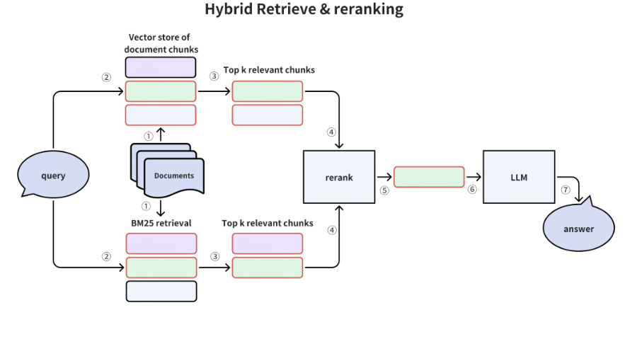
第一阶段：多路召回
| 检索方法 | 原理 | 擅长场景 |
|---|---|---|
| 向量检索（Dense） | 语义相似度匹配 | 同义词、语义理解、模糊查询 |
| BM25（Sparse） | 词频 + 逆文档频率 | 精确关键词、专有名词、代码 |
| SPLADE | 学习型稀疏向量 | 兼顾语义和关键词 |
第二阶段：结果融合
| 步骤 | 操作 | 说明 |
|---|---|---|
| ① | 结果去重 | 多路可能召回相同文档块，去除重复 |
| ② | 分数归一化 | 不同检索方法的分数量纲不同，需归一化 |
| ③ | RRF 融合 | 使用 Reciprocal Rank Fusion 等算法合并排序 |
RRF 公式：
score = Σ 1/(k + rank_i)，k 通常取 60
第三阶段：Reranker 精排
| 步骤 | 操作 | 说明 |
|---|---|---|
| ④ | 候选集输入 | 将融合后的 Top-N（如 50 个）文档块送入 Reranker |
| ⑤ | 交叉编码 | Reranker 对 (Query, Document) 对进行深度语义评分 |
| ⑥ | 重新排序 | 按 Reranker 分数重排，返回最终 Top-K |
5. 优点 / 代价¶
优点：
- 综合多种检索方法优势，显著提升召回率
- Reranker 提供更精准的相关性排序
- 对关键词和语义查询都有良好效果
代价：
- 多路检索增加系统复杂度
- Reranker 计算成本高（需对每个候选文档打分）
- 需要调优各路检索的权重和融合策略
实现参考：Milvus 原生支持混合检索，配合 BGE-Reranker 使用
3.4 三种策略对比总结¶
| 策略 | 核心机制 | 作用阶段 | 适用场景 | 主要代价 |
|---|---|---|---|---|
| 自动合并 | 父子分块 + 动态合并 | 索引构建 + 检索 | 需要完整上下文 | 索引复杂度 |
| 分层索引 | 摘要层 + 块层两级检索 | 索引构建 + 检索 | 海量文档、多文档源 | 摘要生成成本 |
| 混合检索 | 多路召回 + Reranker | 检索阶段 | 通用场景、提升召回 | 计算成本高 |
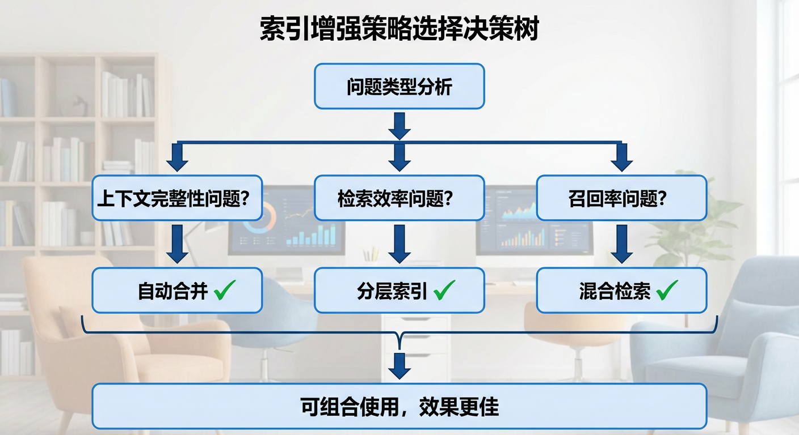
4、检索器增强 (Retriever Enhancement)¶
4.1 核心目标¶
在检索执行阶段，通过优化检索策略和结果处理方式，提升检索的精准度与上下文完整性。解决"精确匹配"与"完整上下文"之间的矛盾。
4.2 核心逻辑¶
- 优化检索匹配的粒度和范围
- 精确匹配后自动扩展上下文
- 利用元数据缩小检索范围，减少噪声
- 多策略组合，实现高效精准的检索流程
4.3 优化策略¶
4.3.1 句子窗口检索 (Sentence Window Retrieval)¶
1. 核心思想¶
用细粒度小块（如单个句子）做向量检索匹配，命中后自动扩展上下文窗口，返回包含前后文的大块给 LLM。实现"小块精准匹配，大块完整上下文"的双赢效果。
2. 解决核心痛点¶
| 痛点 | 问题描述 | 解决方式 |
|---|---|---|
| 粒度悖论 | 小块检索精准但上下文不足，大块上下文完整但检索模糊 | 检索用小块，返回用大块 |
| 信息断裂 | 单独的句子缺乏背景，LLM 难以理解完整含义 | 自动扩展上下文窗口 |
| 语义不完整 | 关键信息可能分布在相邻句子中 | 前后句一并返回，保证完整性 |
3. 核心流程¶
| Text Only | |
|---|---|
1 2 3 4 5 6 7 8 9 10 11 12 13 14 15 16 17 18 19 20 21 22 23 24 | |
4. 核心流程拆解¶
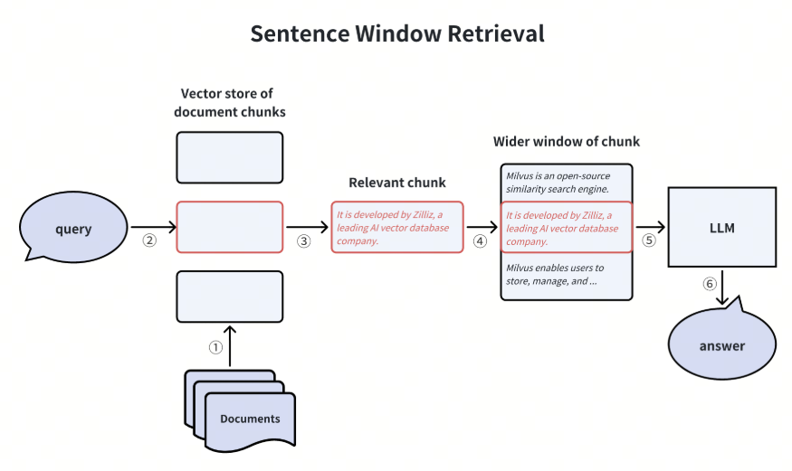
第一阶段：索引构建
| 步骤 | 操作 | 说明 |
|---|---|---|
| ① | 句子级分块 | 将文档按句子边界切分为最小检索单元 |
| ② | 句子向量化 | 将每个句子单独向量化存入向量库 |
| ③ | 位置标记 | 记录每个句子在原文档中的位置索引（文档ID + 句子序号） |
第二阶段：检索与扩展
| 步骤 | 操作 | 说明 |
|---|---|---|
| ④ | 句子级匹配 | 用户查询与句子向量进行相似度匹配，获取 Top-K |
| ⑤ | 确定窗口 | 以每个匹配句子为中心，确定扩展范围（如前后各 N 句） |
| ⑥ | 获取上下文 | 根据位置索引，从原文档获取窗口范围内的完整内容 |
| ⑦ | 组装上下文 | 将扩展后的内容去重合并，作为 LLM 上下文 |
窗口大小示例：技术文档建议 ±3 句，对话记录建议 ±5 句
5. 优点 / 代价¶
优点：
- 检索精准度高（句子级小块匹配）
- 上下文完整性好（窗口扩展返回）
- 实现简单，无需复杂的父子索引结构
- 灵活可调，窗口大小可根据业务需求配置
代价：
- 窗口大小需要调优，过大引入噪声，过小上下文不足
- 对于跨段落的相关内容，扩展窗口可能超出语义边界
- 需要维护句子位置索引，存储开销略有增加
4.3.2 元数据过滤 (Metadata Filtering)¶
1. 核心思想¶
利用文档的结构化元数据（如时间、类别、来源、标签、版本等）在向量检索之前进行预过滤，大幅缩小候选检索范围。先"结构化筛选"，再"语义匹配"，实现高效精准检索。
2. 解决核心痛点¶
| 痛点 | 问题描述 | 解决方式 |
|---|---|---|
| 时间敏感 | 用户只关心特定时间段的内容，全量检索浪费资源 | 按时间范围预过滤 |
| 类别混淆 | 不同领域文档语义相近但主题不同，互相干扰 | 按类别/来源过滤 |
| 噪声过多 | 全量检索返回大量不���关结果，影响 LLM 生成质量 | 元数据预筛选减少候选集 |
| 效率低下 | 海量文档场景下全量向量检索耗时长 | 先过滤后检索，提升效率 |
3. 核心流程¶
| Text Only | |
|---|---|
1 2 3 4 5 6 7 8 9 10 11 12 13 14 15 16 17 18 19 20 21 22 23 24 25 26 27 | |
4. 核心流程拆解¶
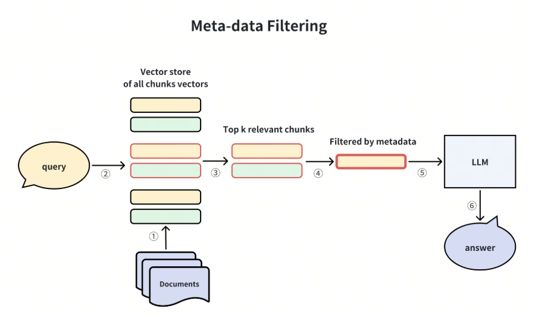
第一阶段：元数据设计与索引
| 步骤 | 操作 | 说明 |
|---|---|---|
| ① | 元数据设计 | 规划文档的元数据字段（时间、类别、来源、版本、作者等） |
| ② | 元数据提取 | 从文档中自动（NLP/规则）或手动提取元数据信息 |
| ③ | 元数据索引 | 在向量库中为元数据字段建立过滤索引（支持高效过滤查询） |
常用元数据字段示例： - 时间类：create_time, update_time, year, quarter - 分类类：category, doc_type, department, product_line - 来源类：source, author, version
第二阶段：查询解析与过滤检索
| 步骤 | 操作 | 说明 |
|---|---|---|
| ④ | 意图解析 | 从用户查询中识别元数据过滤条件（可用 LLM 或规则） |
| ⑤ | 构造过滤器 | 将条件转换为向量库的过滤表达式 |
| ⑥ | 过滤检索 | 先按元数据过滤缩小范围，再在子集内进行向量检索 |
| ⑦ | 返回结果 | 返回满足元数据条件且语义相关的文档块 |
Milvus 过滤表达式示例：
Python filter = "year == 2024 and quarter == 'Q3' and doc_type == '财务报告'" results = collection.search(query_vector, filter=filter, limit=10)
5. 优点 / 代价¶
优点：
- 大幅缩小检索范围，显著提升检索效率
- 精确满足用户的结构化查询需求
- 减少跨类别、跨时间的语义干扰
- 与向量检索正交，可灵活组合
代价：
- 需要设计和维护完善的元数据体系
- 元数据质量直接影响过滤效果（垃圾进，垃圾出）
- 意图解析可能不准确，导致过度过滤（漏掉结果）或过滤不足（噪声仍多）
- 对于没有明确元数据条件的查询，该策略无法发挥作用
4.3.3 组合检索策略 (Combined Retrieval Strategy)¶
1. 核心思想¶
将元数据过滤、向量语义检索、句子窗口扩展三种技术有机组合，形成"过滤 → 匹配 → 扩展"的完整检索流水线。三者各司其职、优势互补，实现高效、精准、完整的检索效果。
2. 解决核心痛点¶
| 痛点 | 问题描述 | 解决方式 |
|---|---|---|
| 单一策略局限 | 单独使用某一策略难以同时满足效率、精准、完整 | 多策略组合，取长补短 |
| 复杂查询场景 | 用户查询同时包含结构化条件和语义需求 | 先结构化过滤，再语义匹配 |
| 端到端优化 | 各环节独立优化，整体效果不佳 | 流水线设计，全局最优 |
3. 核心流程¶
| Text Only | |
|---|---|
1 2 3 4 5 6 7 8 9 10 11 12 13 14 15 16 17 18 19 20 21 22 23 24 25 26 27 28 29 30 31 32 33 34 35 36 37 38 39 | |
4. 核心流程拆解¶
第一阶段：查询解析
| 步骤 | 操作 | 说明 |
|---|---|---|
| ① | 接收查询 | 获取用户原始查询 |
| ② | 意图解析 | 分析查询，提取结构化条件（元数据）和语义查询（核心问题） |
| ③ | 条件分离 | 将元数据条件和语义查询分别处理 |
解析示例： - 原始查询："2024年Q3财务报告中，营收增长情况如何？" - 元数据条件：year=2024, quarter=Q3, doc_type=财务报告 - 语义查询："营收增长情况如何？"
第二阶段：过滤 + 检索
| 步骤 | 操作 | 说明 |
|---|---|---|
| ④ | 元数据过滤 | 根据提取的元数据条件，过滤出候选文档子集 |
| ⑤ | 向量检索 | 在过滤后的子集内，用语义查询进行句子级向量匹配 |
| ⑥ | Top-K 筛选 | 获取相似度最高的 K 个句子 |
第三阶段：扩展 + 返回
| 步骤 | 操作 | 说明 |
|---|---|---|
| ⑦ | 窗口扩展 | 对每个命中的句子，扩展上下文窗口（前后 N 句） |
| ⑧ | 结果合并 | 合并所有扩展后的内容，去重处理 |
| ⑨ | 构建上下文 | 将最终内容组装为 LLM 的输入上下文 |
5. 优点 / 代价¶
优点：
- 全面覆盖：同时处理结构化条件和语义需求
- 效率最优：元数据过滤大幅减少向量检索的候选集
- 精准匹配：句子级检索确保高精准度
- 上下文完整：窗口扩展保证 LLM 获得足够背景信息
- 灵活可配：各环节参数可独立调优
代价：
- 流程复杂度增加，需要维护多个组件
- 意图解析的准确性影响全局效果
- 各环节参数（过滤条件、Top-K、窗口大小）需要联合调优
- 对于简单查询，全流程可能是"杀鸡用牛刀"
4.4 三种策略对比总结¶
| 策略 | 核心机制 | 作用阶段 | 适用场景 | 主要代价 |
|---|---|---|---|---|
| 句子窗口检索 | 小块匹配 + 窗口扩展 | 检索 + 后处理 | 需要完整上下文 | 窗口调优 |
| 元数据过滤 | 结构化预过滤 | 检索前 | 有明确筛选条件 | 元数据维护 |
| 组合检索 | 过滤→匹配→扩展 | 全流程 | 复杂查询场景 | 流程复杂度 |
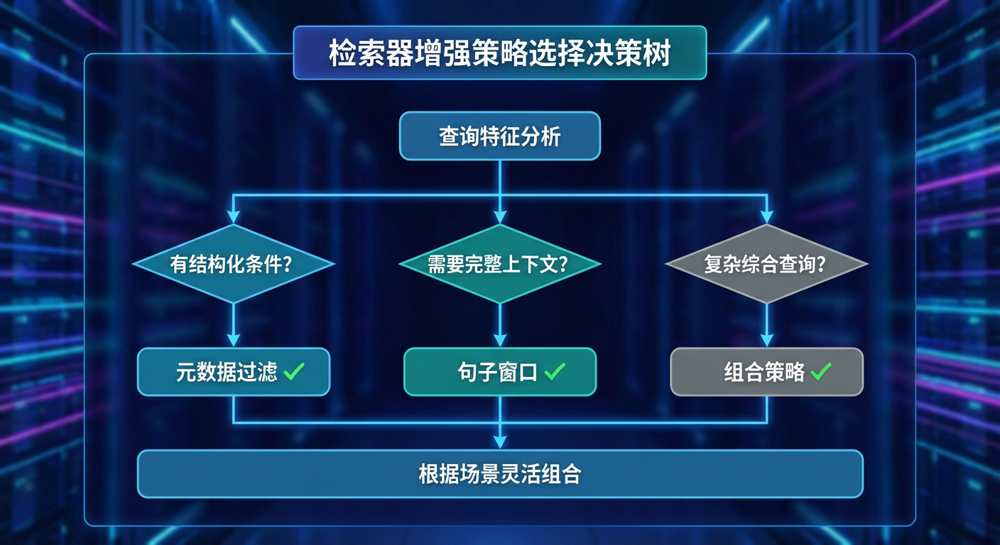
5、生成器增强 (Generator Enhancement)¶
5.1 核心目标¶
在检索结果传递给 LLM 之前，通过优化提示内容和结构，提升 LLM 生成答案的质量。解决"上下文过长"与"关键信息利用率低"之间的矛盾。
5.2 核心逻辑¶
- 过滤检索结果中的噪声和冗余信息
- 压缩上下文，减少 Token 消耗
- 优化内容排列顺序，提升关键信息利用率
- 确保 LLM 能够聚焦于最相关的内容
5.3 优化策略¶
5.3.1 提示压缩 (Prompt Compression)¶
1. 核心思想¶
检索返回的多个文档块中，往往包含噪声和低相关内容。提示压缩策略通过相关性评分和内容筛选，去除冗余信息，只保留与用户查询高度相关的核心内容，从而提升 LLM 的生成质量和效率。
2. 解决核心痛点¶
| 痛点 | 问题描述 | 解决方式 |
|---|---|---|
| 噪声干扰 | 检索结果包含不相关内容，干扰 LLM 理解 | Reranker 评分过滤低相关块 |
| Token 浪费 | 大量冗余内容消耗宝贵的上下文窗口 | 压缩保留精华，减少 Token 用量 |
| 信息稀释 | 关键信息被淹没在大量文本中 | 筛选后关键信息密度更高 |
| 生成质量 | 噪声过多导致 LLM 生成答案偏离主题 | 精准上下文提升答案准确性 |
3. 核心流程¶
| Text Only | |
|---|---|
1 2 3 4 5 6 7 8 9 10 11 12 13 14 15 16 17 18 19 20 21 22 23 24 25 26 27 28 29 30 31 32 33 34 35 36 37 | |
4. 核心流程拆解¶
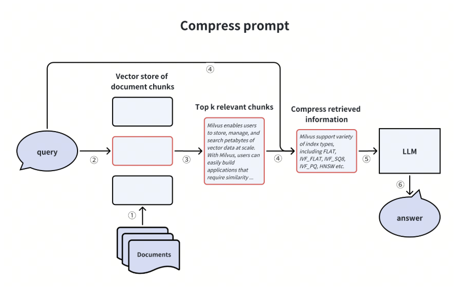
第一阶段：相关性评估
| 步骤 | 操作 | 说明 |
|---|---|---|
| ① | 接收检索结果 | 获取向量检索返回的 Top-K 文档块 |
| ② | Reranker 评分 | 使用 Cross-Encoder 对 (Query, Document) 对进行深度语义评分 |
| ③ | 分数归一化 | 将评分归一化到 0-1 范围，便于统一阈值判断 |
常用 Reranker 模型： - BGE-Reranker-Large - ms-marco-MiniLM-L6 - Cohere Rerank
第二阶段：内容筛选
| 步骤 | 操作 | 说明 |
|---|---|---|
| ④ | 阈值过滤 | 去除评分低于阈值（如 0.5）的文档块 |
| ⑤ | Top-N 截取 | 保留评分最高的 N 个文档块（如 Top-3） |
| ⑥ | 可选：摘要压缩 | 对保留的块进一步用 LLM 提取关键句 |
第三阶段：构建提示
| 步骤 | 操作 | 说明 |
|---|---|---|
| ⑦ | 组装上下文 | 将筛选后的文档块组合为 LLM 输入上下文 |
| ⑧ | 生成答案 | LLM 基于精简上下文生成高质量答案 |
5. 优点 / 代价¶
优点：
- 显著减少 Token 消耗，降低 API 成本
- 去除噪声，提升 LLM 生成答案的准确性
- 关键信息密度更高，LLM 更容易抓住重点
- 可与其他策略（如块排序）组合使用
代价：
- Reranker 增加计算成本和延迟
- 阈值设置不当可能误删重要内容
- 极端压缩可能丢失必要的背景信息
- 需要调优压缩参数（阈值、Top-N）
5.3.2 块顺序调整 (Chunk Ordering / Lost in the Middle)¶
1. 核心思想¶
研究发现 LLM 存在"迷失在中间"（Lost in the Middle）现象：对于长上下文，LLM 更关注开头和结尾的内容，而容易忽略中间部分。块顺序调整策略利用这一特性，将高相关内容放在首尾位置，低相关内容放在中间，最大化关键信息的利用率。
2. 解决核心痛点¶
| 痛点 | 问题描述 | 解决方式 |
|---|---|---|
| 中间遗忘 | LLM 对长文本中间部分的注意力下降 | 重要内容放首尾，利用注意力分布 |
| 顺序随机 | 检索结果按相似度排序，未考虑 LLM 特性 | 根据 LLM 注意力特点重排 |
| 关键信息利用率低 | 最相关的内容可能被放在中间被忽略 | 策略性布局，确保关键信息被关注 |
3. 核心流程¶
| Text Only | |
|---|---|
1 2 3 4 5 6 7 8 9 10 11 12 13 14 15 16 17 18 19 20 21 22 23 24 25 26 27 28 29 30 31 32 | |
4. 核心流程拆解¶
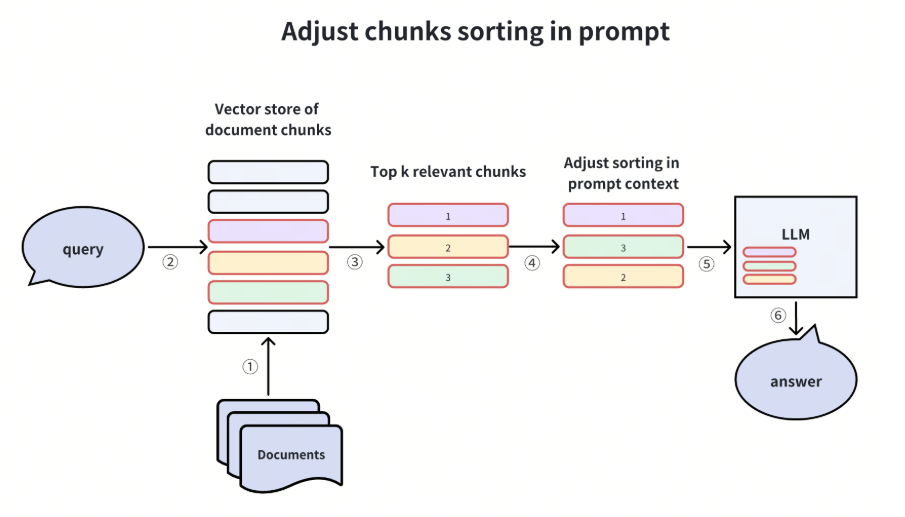
第一阶段：评分排序
| 步骤 | 操作 | 说明 |
|---|---|---|
| ① | 获取检索结果 | 接收带有相关性分数的文档块列表 |
| ② | 分数排序 | 按相关性分数降序排列 |
| ③ | 分组划分 | 将文档块划分为高分组、中分组、低分组 |
第二阶段：策略性重排
| 步骤 | 操作 | 说明 |
|---|---|---|
| ④ | 首位放置 | 将最高分的块放在开头位置 |
| ⑤ | 末位放置 | 将次高分的块放在结尾位置 |
| ⑥ | 中间填充 | 将中低分的块放在中间位置 |
重排公式示例（5个块的情况）： - 原始顺序：[1, 2, 3, 4, 5]（按分数降序） - 重排后：[1, 3, 5, 4, 2]（高分在首尾）
第三阶段：输出
| 步骤 | 操作 | 说明 |
|---|---|---|
| ⑦ | 组装提示 | 按重排后的顺序组装上下文 |
| ⑧ | 送入 LLM | LLM 基于优化后的提示生成答案 |
5. 优点 / 代价¶
优点：
- 充分利用 LLM 的注意力分布特性
- 无需额外计算，仅重排即可提升效果
- 实现简单，可与其他策略无缝组合
- 对长上下文场景效果尤为显著
代价：
- 对短上下文效果不明显
- 不同 LLM 的注意力分布可能略有差异
- 需要预先获取可靠的相关性分数
- 如果所有块相关性都很高，重排收益有限
5.4 两种策略对比总结¶
| 策略 | 核心机制 | 作用阶段 | 适用场景 | 主要代价 |
|---|---|---|---|---|
| 提示压缩 | Reranker 筛选 + 过滤 | 检索后处理 | 检索结果噪声多、Token 预算紧张 | 计算成本 |
| 块顺序调整 | Lost in the Middle 重排 | 提示构建 | 长上下文、多文档块场景 | 需要可靠分数 |
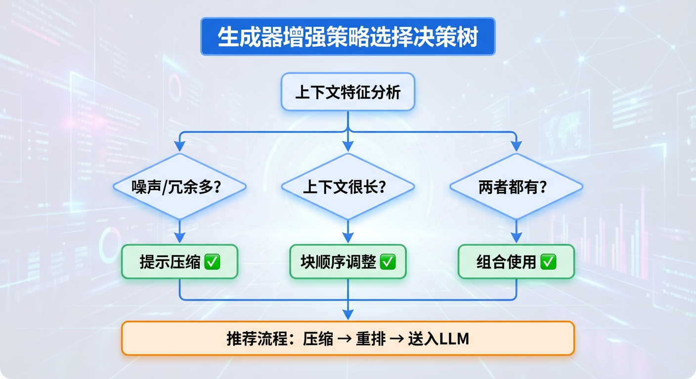
6、管道增强 (RAG Pipeline Enhancement)¶
6.1 核心目标¶
在 RAG 全流程层��引入智能决策和自我修正机制，动态优化整个管道的执行路径。解决"一刀切流程"与"多样化查询需求"之间的矛盾，处理 RAG 系统的边界情况。
6.2 核心逻辑¶
- 引入智能路由，根据查询特征选择最优处理路径
- 检索后进行质量验证，不满足要求时自动修正
- 处理 RAG 系统的边界情况（如知识库无法回答的问题）
- 实现"感知-决策-执行-反馈"的闭环优化
6.3 优化策略¶
6.3.1 自我反思 (Self-Reflection / Corrective RAG)¶
1. 核心思想¶
在检索完成后、生成答案前，引入反思验证环节，评估检索结果是否真正能够回答用户问题。如果检索结果不充分或不相关，则触发修正机制（如重新检索、扩展查询、或调用外部搜索），确保最终答案的质量。这是一种"先验证，后生成"的质量保障策略。
2. 解决核心痛点¶
| 痛点 | 问题描述 | 解决方式 |
|---|---|---|
| 盲目信任检索 | 检索结果可能不相关，但系统仍基于其生成答案 | 反思验证，评估检索质量 |
| 知识库盲区 | 知识库中没有相关内容，但系统仍尝试回答 | 识别���区，触发外部搜索 |
| 答案质量不可控 | 无法保证每次生成的答案都是高质量的 | 闭环验证，不达标则修正 |
| 一次检索不足 | 复杂问题可能需要多轮检索才能获取足够信息 | 自动触发补充检索 |
3. 核心流程¶
| Text Only | |
|---|---|
1 2 3 4 5 6 7 8 9 10 11 12 13 14 15 16 17 18 19 20 21 22 23 24 25 26 27 28 29 30 31 32 33 34 35 | |
4. 核心流程拆解¶
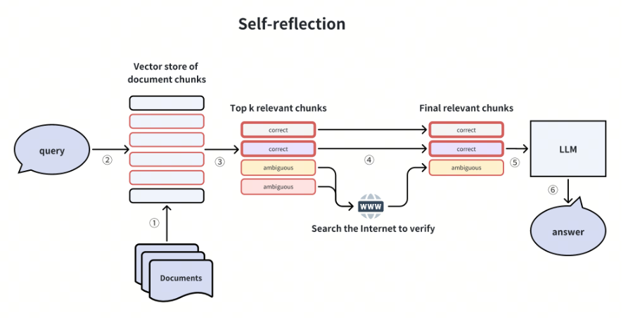
第一阶段：初次检索
| 步骤 | 操作 | 说明 |
|---|---|---|
| ① | 接收查询 | 获取用户原始查询 |
| ② | 向量检索 | 在知识库中检索 Top-K 相关文档块 |
| ③ | 结果准备 | 将检索结果准备送入反思验证 |
第二阶段：反思验证
| 步骤 | 操作 | 说明 |
|---|---|---|
| ④ | 相关性评估 | 用 LLM 或 NLI 模型评估：检索结果是否能回答用户问题 |
| ⑤ | 分类判断 | 根据评估结果分类：完全相关 / 部分相关 / 不相关 |
| ⑥ | 路径决策 | 根据分类结果决定下一步操作 |
反思 Prompt 示例：
Text Only 给定用户问题和检索到的文档，请判断： 1. 文档是否包含回答问题所需的信息？ 2. 评分：完全相关(2) / 部分相关(1) / 不相关(0) 3. 如果部分相关，缺少什么信息？
第三阶段：修正与生成
| 步骤 | 操作 | 说明 |
|---|---|---|
| ⑦ | 完全相关 | 直接基于检索结果生成答案 |
| ⑧ | 部分相关 | 根据缺失信息扩展查询，进行补充检索 |
| ⑨ | 不相关 | 调用外部搜索（如 Web Search）或明确告知用户"超出知识范围" |
| ⑩ | 最终生成 | 基于修正后的上下文生成高质量答案 |
5. 优点 / 代价¶
优点：
- 显著提升答案质量和可靠性
- 自动处理知识库盲区，避免胡编乱造
- 支持多轮检索，应对复杂问题
- 可与外部搜索无缝集成，扩展能力边界
代价：
- 增加 LLM 调用次数，延迟上升
- 反思判断本身可能出错（假阳性/假阴性）
- 流程复杂度增加，调试难度上升
- 需要设计合理的修正策略和终止条件
相关项目：
6.3.2 查询路由 (Query Routing with Agent)¶
1. 核心思想¶
并非所有查询都需要完整的 RAG 流程。查询路由策略引入智能路由 Agent，在处理用户查询之前，先分析查询特征，然后动态选择最优处理路径：可能是直接回答（简单问题）、RAG 检索（知识库问题）、外部搜索（实时信息）、或多种方法组合。实现"按需调度，精准匹配"。
2. 解决核心痛点¶
| 痛点 | 问题描述 | 解决方式 |
|---|---|---|
| 过度处理 | 简单问题（如"1+1=?"）也走完整 RAG 流程，浪费资源 | 路由识别，简单问题直接回答 |
| 处理不足 | 需要实时信息的问题仅在静态知识库中检索 | 路由识别，调用外部搜索 |
| 一刀切流程 | 所有查询走相同流程，无法针对性优化 | 根据查询特征选择最优路径 |
| 能力边界模糊 | 系统不知道自己能回答什么、不能回答什么 | Agent 判断，明确能力边界 |
3. 核心流程¶
| Text Only | |
|---|---|
1 2 3 4 5 6 7 8 9 10 11 12 13 14 15 16 17 18 19 20 21 22 23 24 25 26 27 28 29 30 31 | |
4. 核心流程拆解¶
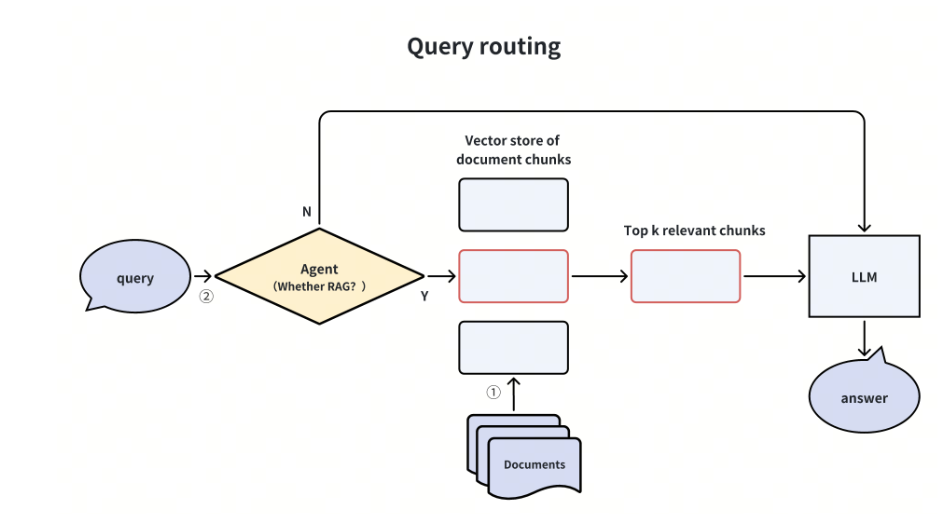
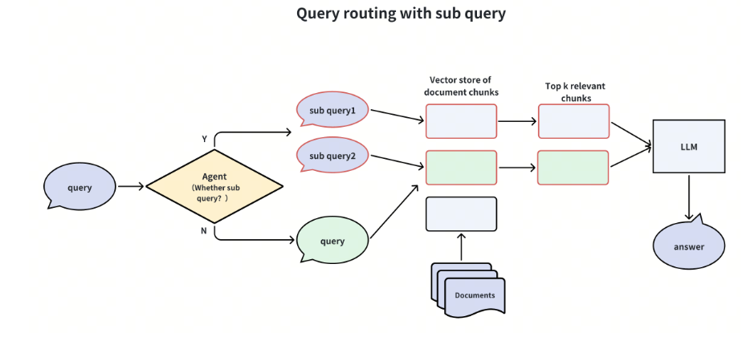
第一阶段：查询分析
| 步骤 | 操作 | 说明 |
|---|---|---|
| ① | 接收查询 | 获取用户原始查询 |
| ② | 特征提取 | 分析查询的类型、复杂度、时效性要求等特征 |
| ③ | 意图识别 | 识别查询意图：事实查询 / 分析推理 / 实时信息 / 闲聊等 |
查询分类维度： - 复杂度：简单（直接回答） vs 复杂（需要检索） - 时效性：静态知识 vs 实时信息 - 领域：知识库覆盖 vs 超出范围
第二阶段：路由决策
| 步骤 | 操作 | 说明 |
|---|---|---|
| ④ | 路由判断 | 根据查询特征，决定处理路径 |
| ⑤ | 路径选择 | 选择一种或多种处理方式的组合 |
路由规则示例：
Text Only if 简单常识问题 → 直接回答 elif 知识库专业问题 → RAG 检索 elif 需要最新信息 → 外部搜索 elif 复杂多跳问题 → 子查询分解 + RAG else → RAG 检索（默认）
第三阶段：执行与整合
| 步骤 | 操作 | 说明 |
|---|---|---|
| ⑥ | 路径执行 | 按选定路径执行相应操作 |
| ⑦ | 结果整合 | 如果多路径并行，整合各路结果 |
| ⑧ | 生成答案 | 基于整合后的上下文生成最终答案 |
5. 优点 / 代价¶
优点：
- 资源利用更高效，简单问题快速响应
- 灵活应对多种类型查询，用户体验更好
- 可扩展性强，易于添加新的处理路径
- 明确系统能力边界，减少错误回答
代价：
- 路由判断本身消耗资源（LLM 调用或分类模型）
- 路由决策错误可能导致处理不当
- 系统复杂度增加，需要维护多条路径
- 需要设计合理的路由规则或训练路由模型
实现方式： - LLM 路由：用 LLM 分析查询并输出路由决策 - 分类模型：训练专门的查询分类模型 - 规则引擎：基于关键词、模式匹配的规则路由
6.4 两种策略对比总结¶
| 策略 | 核心机制 | 作用阶段 | 适用场景 | 主要代价 |
|---|---|---|---|---|
| 自我反思 | 检索后验证 + 修正 | 检索后 | 高质量要求、知识库可能不足 | 多轮 LLM 调用 |
| 查询路由 | 智能分析 + 路径选择 | 检索前 | 查询类型多样、需要灵活处理 | 路由判断成本 |
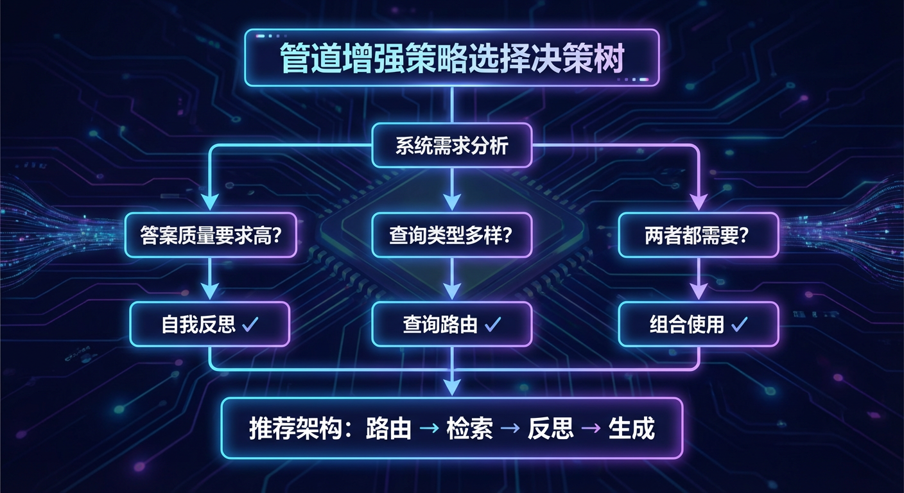
总结：五维RAG增强体系全景¶
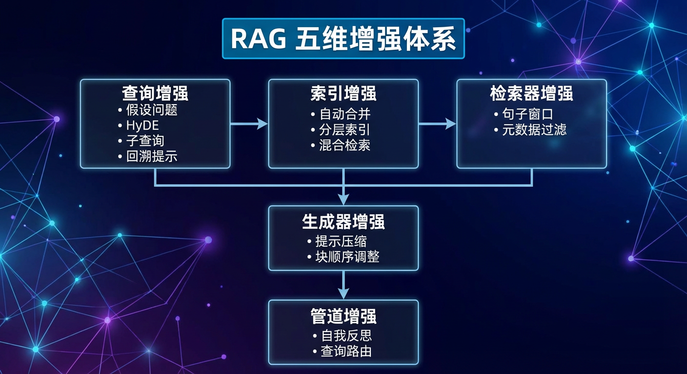
附录：相关资源¶
- GitHub 代码示例：Milvus Bootcamp - Advanced RAG
- 相关论文：
- HyDE
- Lost in the Middle
- Self-RAG
- Corrective RAG